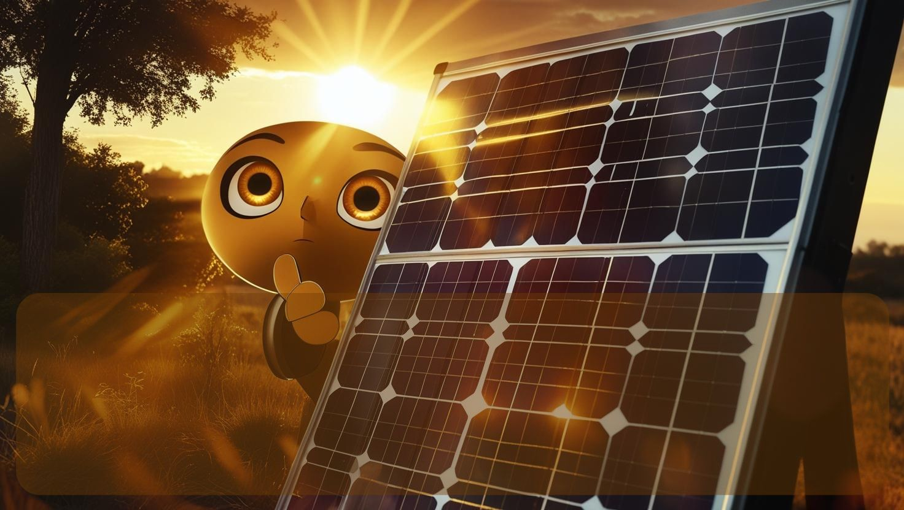
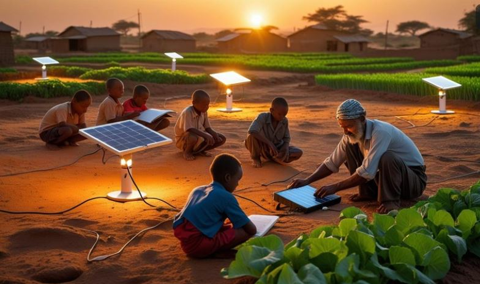
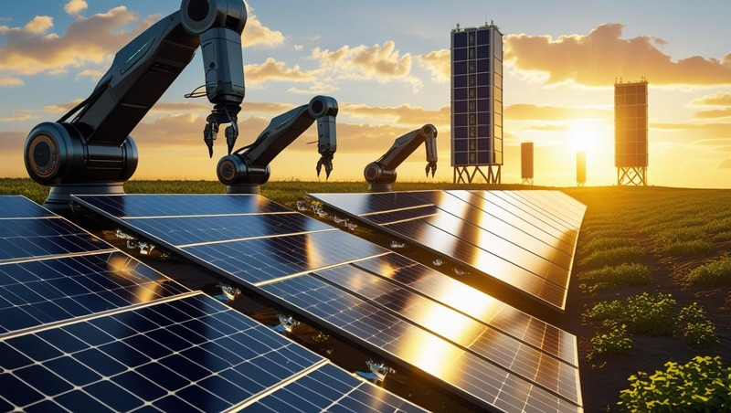

-

En un mundo donde el cambio climático y el agotamiento de los recursos naturales son una realidad, adoptar energías alternativas se ha vuelto una necesidad urgente. Entre estas, los paneles solares gestionados con inteligencia artificial (IA) destacan como una solución innovadora y eficiente. -

La integración de la IA permite maximizar la eficiencia, reducir costos y minimizar el desperdicio, haciendo que la energía solar sea aún más accesible y sostenible. -

Adoptar estas tecnologías no solo beneficia al medio ambiente, sino que también impulsa el desarrollo económico y mejora la calidad de vida. -

Es momento de actuar: invertir en energías renovables inteligentes es invertir en un futuro más verde y responsable para las próximas generaciones. -
¡El sol es una fuente inagotable de energía; usémosla con inteligencia!🌞⚡
La energía solar ha experimentado avances significativos con la implementación de paneles de última generación, como los de perovskita, que ofrecen mayor eficiencia y menor costo en comparación con los paneles tradicionales de silicio. Además, las innovaciones en paneles bifaciales permiten capturar luz solar por ambas caras, incrementando su rendimiento hasta un 25%. Países como China, Alemania y España están liderando proyectos de gran escala con sistemas de almacenamiento en baterías de ion-litio, facilitando el suministro continuo incluso en horas sin luz. Estas tecnologías, combinadas con inteligencia artificial para optimizar el seguimiento solar, están revolucionando la transición hacia energías limpias y accesibles.
Revolución
La inteligencia artificial está revolucionando la eficiencia de los paneles solares mediante algoritmos de aprendizaje automático que predicen patrones climáticos y ajustan en tiempo real la inclinación de los paneles para maximizar la captación de luz. Empresas como Google DeepMind y Tesla están implementando redes neuronales que analizan terabytes de datos para optimizar la distribución energética en redes inteligentes, reduciendo pérdidas y anticipando picos de demanda. Incluso se están desarrollando sistemas de IA que detectan fallos en los paneles mediante drones con cámaras térmicas, agilizando el mantenimiento y prolongando su vida útil.
Innovación
Otra innovación clave es el uso de IA generativa para diseñar nuevos materiales fotovoltaicos, acelerando el descubrimiento de células solares más eficientes que podrían superar el 30% de rendimiento. Startups como Heliogen emplean visión por computadora y robótica para crear plantas solares con espejos autoalineables que concentran calor a temperaturas industriales. Estas soluciones no solo hacen la energía solar más competitiva, sino que también permiten su integración en smart cities, donde sistemas predictivos gestionan el consumo energético en tiempo real, marcando el camino hacia un futuro 100% renovable.
Ventajas frente a otras energías Renovables
La energía solar impulsada por IA no solo es más eficiente, sino también más accesible y escalable, democratizando el acceso a energías limpias en zonas remotas o en desarrollo. Los sistemas inteligentes permiten una gestión autónoma de microrredes solares, optimizando el almacenamiento y distribución incluso en comunidades sin infraestructura eléctrica tradicional. Además, la reducción de costos —gracias a la automatización en la fabricación de paneles y la predicción de mantenimiento— está acelerando el retorno de la inversión, haciendo que hogares y empresas adopten esta tecnología más rápido que nunca. Combinando sostenibilidad, ahorro y resiliencia energética, la energía solar con IA se posiciona como la columna vertebral de la transición verde global.
Energía Solar: Un camino hacia el Futuro
El futuro de la energía solar apunta hacia una integración total con tecnologías disruptivas, como paneles solares transparentes en ventanas y fachadas, o incluso pinturas fotovoltaicas que convierten cualquier superficie en generadores de energía. La combinación con inteligencia artificial y redes de almacenamiento descentralizadas permitirá crear "redes eléctricas autónomas", donde cada edificio o vehículo producirá, almacenará y compartirá energía limpia en tiempo real. Proyectos pioneros, como granjas solares espaciales que transmiten energía a la Tierra mediante microondas, ya están en fase experimental, prometiendo un suministro ilimitado y constante. Con avances así, la energía solar no solo reemplazará a los combustibles fósiles, sino que redefinirá por completo cómo consumimos y distribuimos la electricidad en el siglo XXI.